ADMINISTRACJA SYSTEMAMI OPERACYJNYMI / Serwer Web www /part 1 - apache2
Serwer Web www /part 1 - Apache2
Zainstaluj sambe: 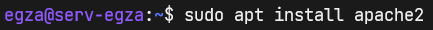 Czestym rozwiązaniem błędów przy instalacji pakietów jest aktualizacja listy repozytorjów: Po instalacji apache2 nie uruchamia się automatycznie. Należy tą
usługę wystartować ręcznie:
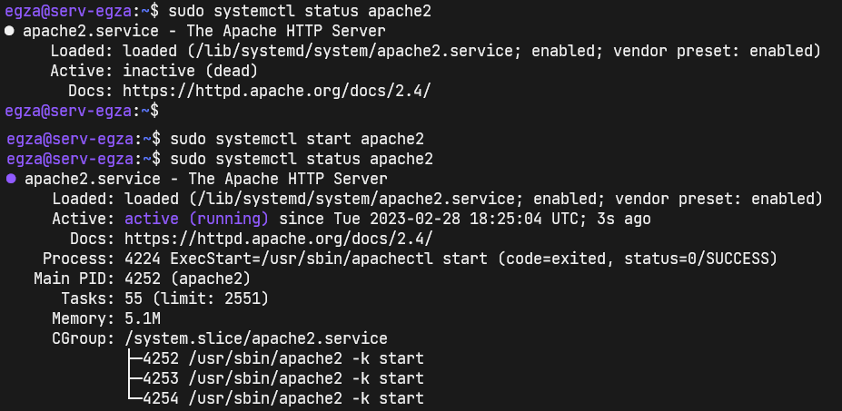
Jak widać na wirtualnej maszynie Windows 10 pod adresem serwera wyświetla
się domyślna strona Apach2.
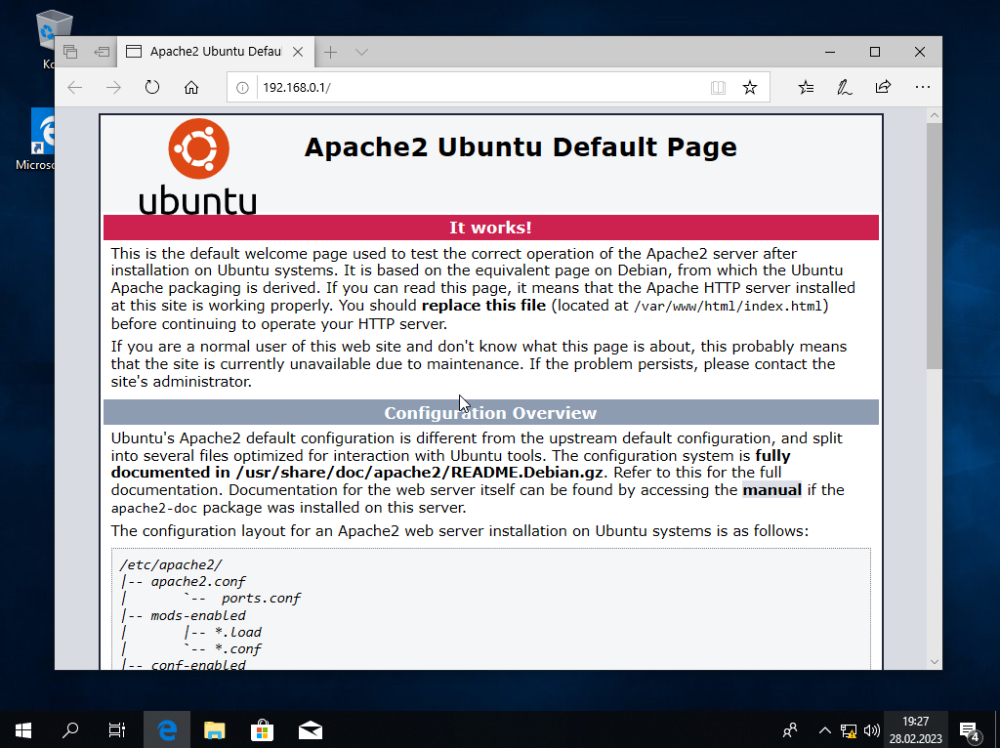
Musimu teraz dokonać pewnych konfiguracji w maszynie wirtualnej
Windows10 oraz Ubuntu20.04_Server.
Po instalacji apache2 nie uruchamia się automatycznie. Należy tą
usługę wystartować ręcznie:
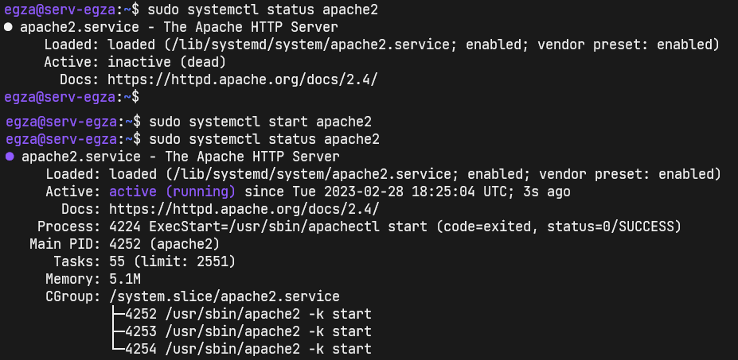
Jak widać na wirtualnej maszynie Windows 10 pod adresem serwera wyświetla
się domyślna strona Apach2.
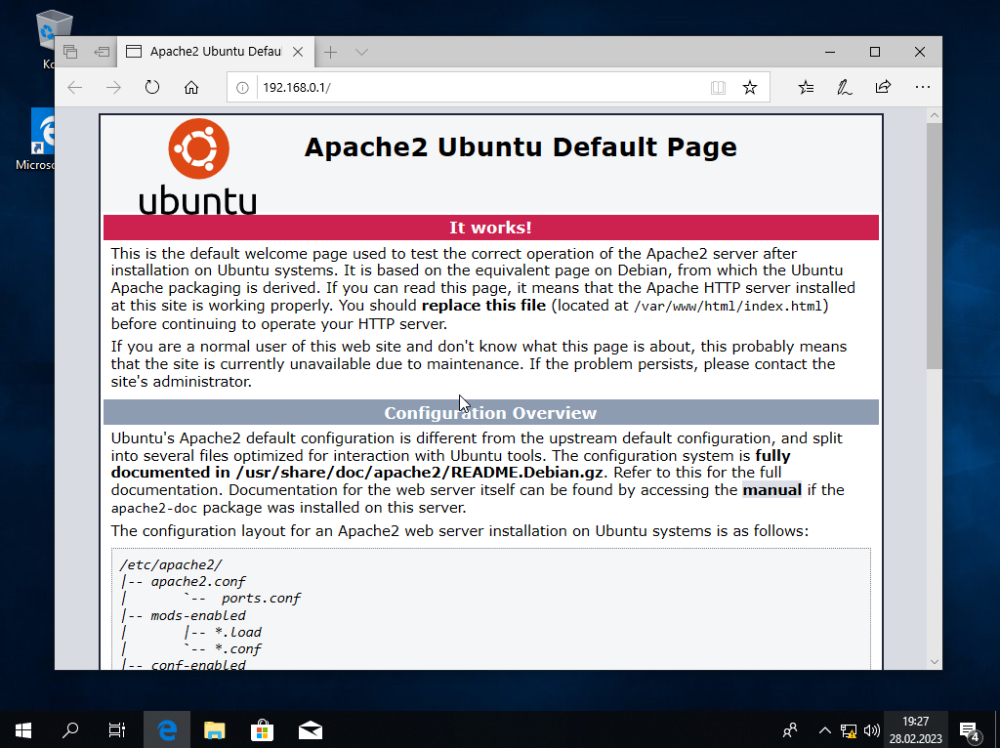
Musimu teraz dokonać pewnych konfiguracji w maszynie wirtualnej
Windows10 oraz Ubuntu20.04_Server. Na Ubuntu20.04_Server dodaj kolejne przekierowanie portów. 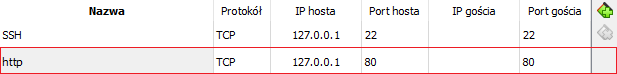 Na Windows10 dodaj folder z zawartością zasobu Pliki strony świat koali ( dostępny do pobrania w "Zasoby do pobrania" ) jako udostępniony dla mszyny.
Ps.: jak nie zainstalowałeś dodatku gościa, to bedziesz musiał to zrobić. 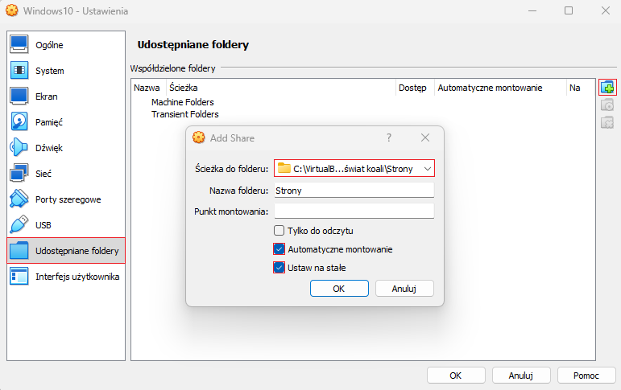 Przenieś pliki z folderu udostepnionego Windowsowi na serwer Ubuntu za pośrednictwem udziału sieciowego samby. 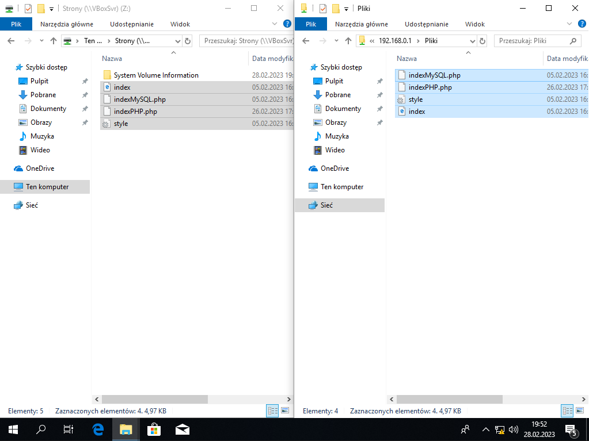 Przekierowanie portu http 80 umożliwiło mi uruchomienie na localhost lub 127.0.0.1 strony z serwera Ubuntu w Google Chrome na moim Windows 11. 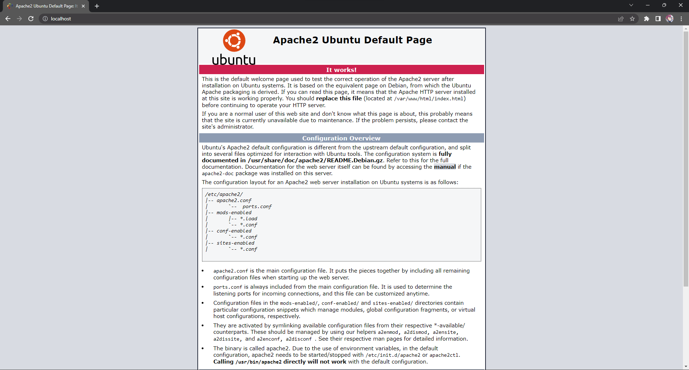 W katalogu /pliki/ znajduję się też zawartość zasobu Pliki strony świat koali. 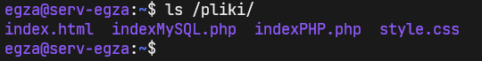 Uruchom moduł userdir, który pozwoli nam na hostowanie wirtualnych stron WwW przypisanych do konkretnych użytkowników na jednym serwerze. 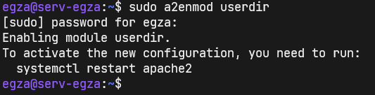 Utwórz użytkownika "koala" z poniższą klauzulą --shell. 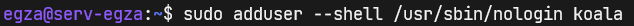 Dzieki zastosowanej powyżej klauzuli --shell, zalogowanie się poprzez terminal i połączenie SSH jest niemożliwe. 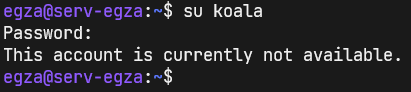 Aby pliki strony mogły być prawidłowo wykrywane, wymagane jest stworzenie katalogu "public_html" w lokalizacji /home/użytkownik/ u mnie "koala". 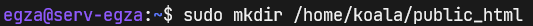 Tworząc katalog "public_html" skorzystałem z sudo wiec zrobiłem to jako root, co widać poniżej. 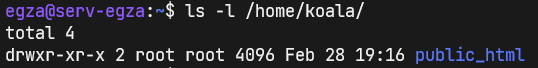 Zmień właściciela na swojego użytkownika wiedząc że podczas tworzenia użytkownika powstaje jednocześnie grupa do kturej jest przypisana o nazwie identycznej co użytkownik. Po tem sprawdź czy właścicielem "public_html" jest twój użytkownik. 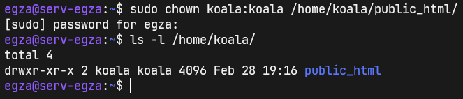 Pamiętasz jak wcześniej za pomocą samby przenosiłeś pliki zasobu "Pliki strony świat koali"? To teraz za pomocą "mv" przenieś je do katalogu "public_html" swojego użytkownika. 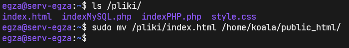 Zrestartuj usługę apache2. 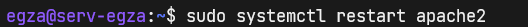 Pierwszy etap prac nad serwerem Web WwW za nami. Uff wszystko działa :) 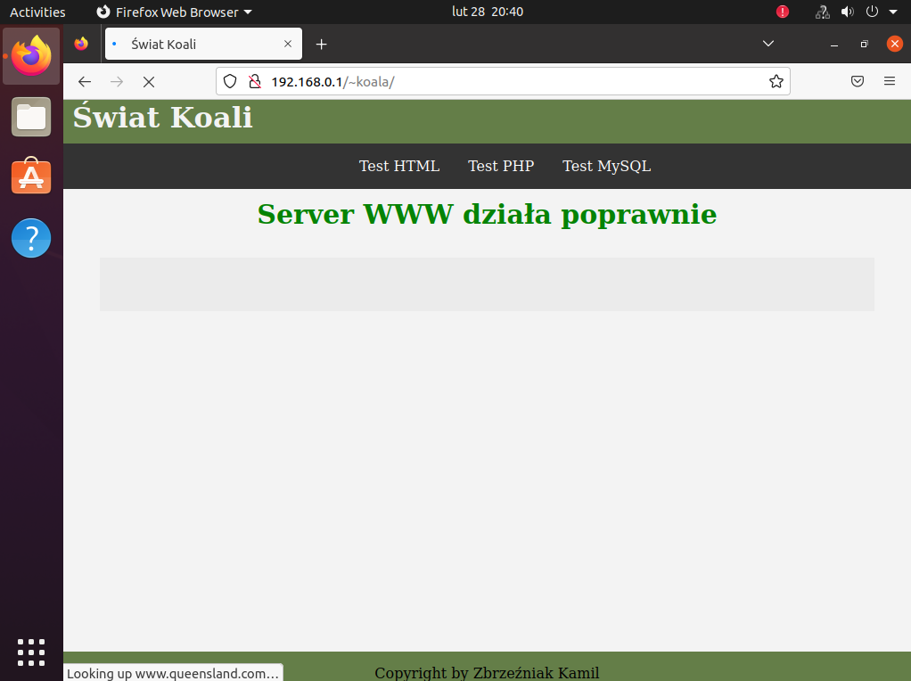